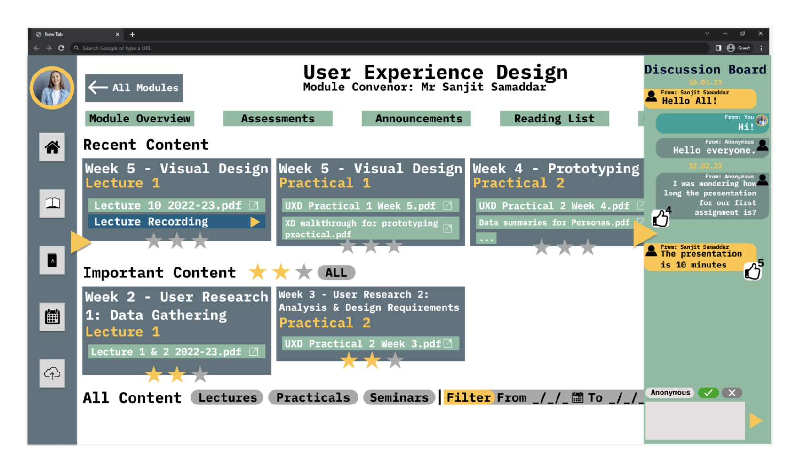

Abigail Kotar
Software. Data. Design.
Improved Yorkshare VLE: User Experience
With Joseph Hutchinson, Taylor Angel, and Tina Yao at the University of York, my groupmates and I were tasked with researching and improving an online learning tool. To do so, we conducted ethical user research through a survery and semi-structured interviews.
From those results, we decided to focus on the University of York's VLE, or virtual learning environment, as the most users commented on it. We then created personas and a user experience map based off of our data.
Finally, we created wireframes and then a final high-fiedlity prototype in Figma.
Demo
UX Research
As a group, we wanted to target issues within the current virtual learning environemnts that students use. We tried to make little assumptions about what users actually wanted and used our survey as a way to have users express how they felt about certain tools.


We noticed a disparity from the results above, showing that most students wanted featured like a built-in timetable. We decided to focus on renovating the Yorkshare VLE, the tool that University of York students use, as a majority of our responses were from York students.
We then conducted the semi-structured interviews which allowed us to dive deeper into how students felt about the VLE and what problems they faced.
Personas and Journeys
Based on our user research we created a primary and secondary persona that reflected the population we were targetting. We were targetting students, but also teacher assistants and graduate students who would be on both ends of the platform.


Inspired by Lego's user journey map, we created a similar map showcasing a user's struggles and how new features could fix these pain points.
Wireframes
We created wireframes for each page in Balsamiq. These wireframes were based off of our collected data as well as our observations of existing virtual learing environements, espically Moodle.
Prototyping
First, we decided on a more vibrant color palette to enhance the user experience. We found a lot of virtual learning environments to be plain, and our surveys suggested a more vibrant palette might make the website more interesting.
As seen in the course page above, we used this vibrant color palette while incorporating important features based on our user research.